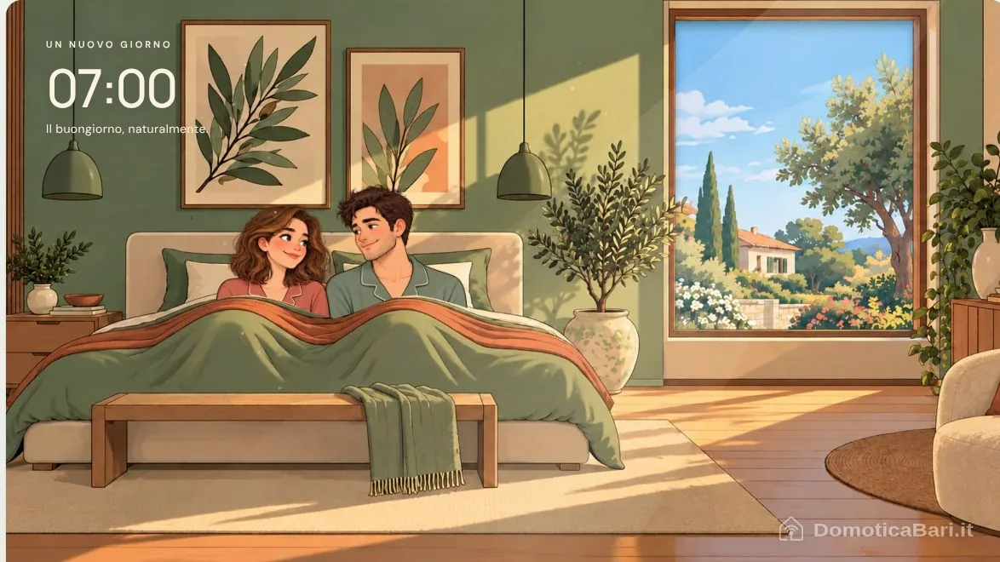
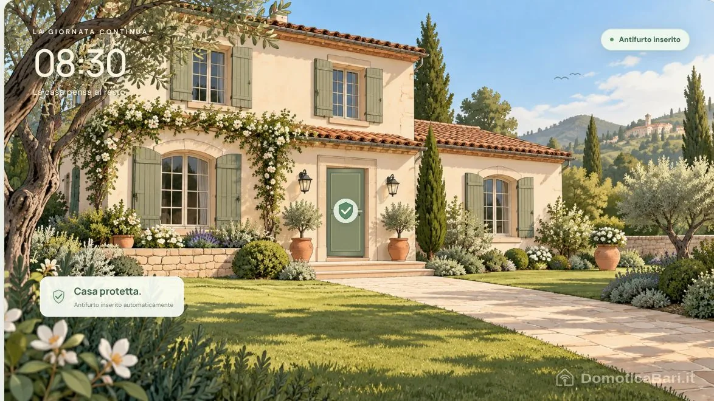
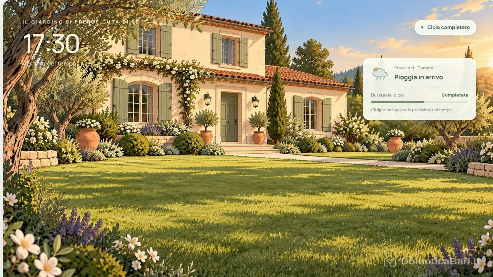
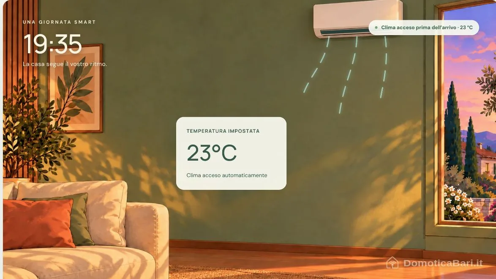
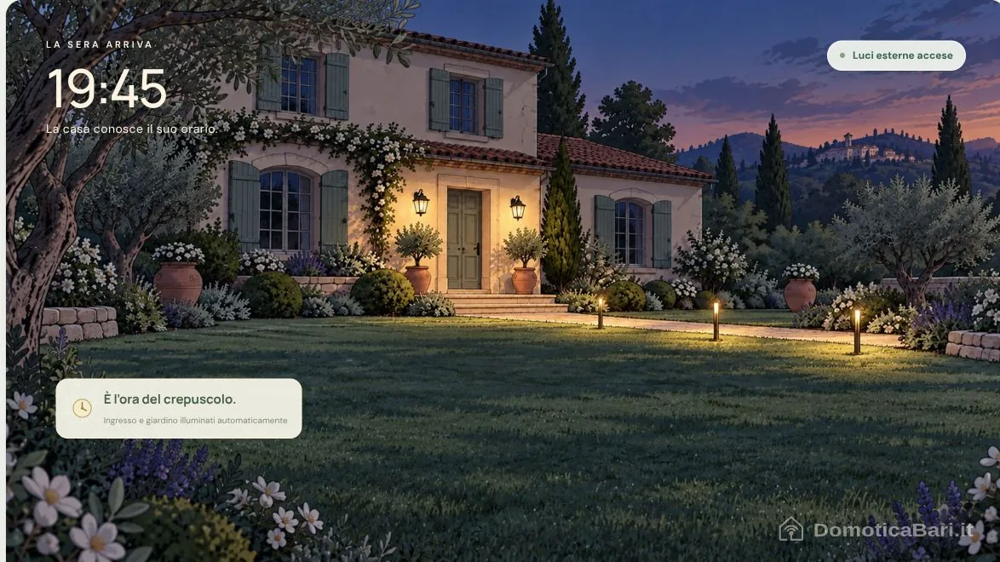
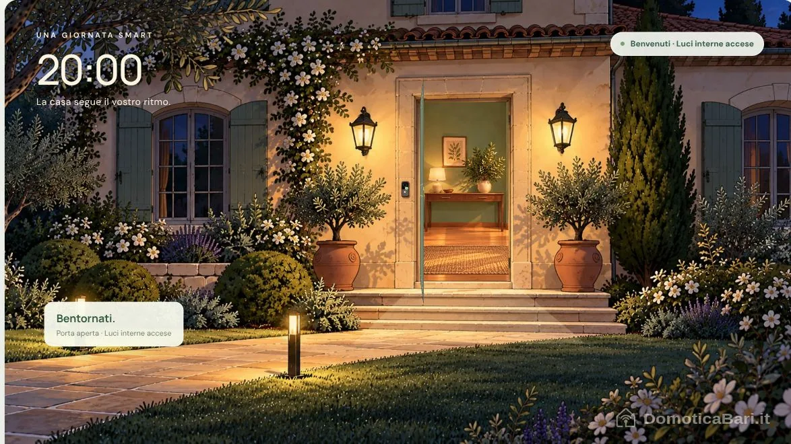
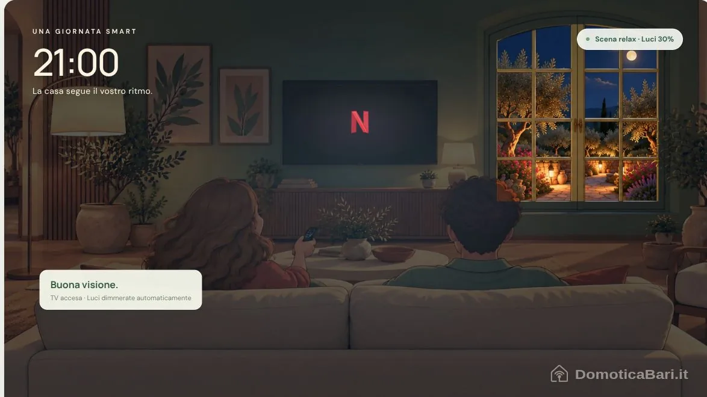
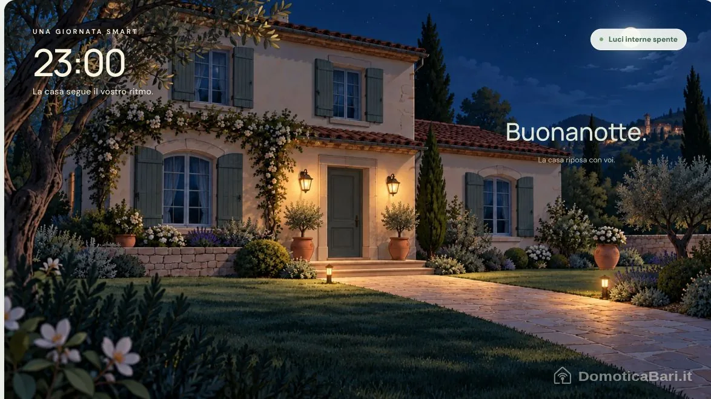

La casa segue
il vostro ritmo.
Una coppia, una giornata, otto piccoli gesti.
Guarda il film completo oppure scegli una clip: la domotica entra nella vita di tutti i giorni.

Le otto clip
Otto gesti. Tante possibilità.
Scopri cosa puoi automatizzare e come ogni soluzione può adattarsi alle tue abitudini.

Il risveglio, al ritmo che scegli tu.
La giornata può iniziare con la luce del sole: all’orario desiderato, la tapparella si alza gradualmente e la camera si illumina senza dover cercare interruttori o telecomandi.
- Orari e abitudiniProgrammare aperture diverse nei giorni lavorativi e nel weekend.
- Luce e comfortCoordinare tapparelle, tende e illuminazione con uno scenario di risveglio.
- Sempre modificabileCambiare l’orario o richiamare lo scenario da un comando a parete o dall’app.
Nella vita di tutti i giorniUno scenario “Buongiorno” può aprire le tapparelle alle 7:00 e lasciare spente le lampade quando basta la luce naturale.
Torna alle otto clip ↑
Esci di casa. La protezione entra in azione.
Un solo scenario può preparare la casa quando esci: verificare gli accessi, spegnere le luci rimaste accese e inserire l’antifurto. L’attivazione può seguire un comando o le condizioni impostate per la tua famiglia.
- Accessi sotto controlloRicevere una segnalazione se una porta o una finestra risulta ancora aperta.
- Protezione su misuraGestire zone e modalità diverse, anche quando qualcuno rimane in casa.
- Informazioni a distanzaConsultare lo stato dell’impianto e ricevere notifiche degli eventi.
Nella vita di tutti i giorniLo scenario “Esco” può inserire l’allarme dopo la chiusura della porta, con il tempo necessario per allontanarsi.
Torna alle otto clip ↑
Acqua quando serve, dove serve.
L’irrigazione può adattarsi al giardino e alle condizioni del tempo. Invece di ripetere sempre lo stesso ciclo, la casa può modificare la durata o saltare un’annaffiatura quando è prevista pioggia.
- Zone indipendentiImpostare tempi diversi per prato, aiuole e piante.
- Meteo e terrenoUsare previsioni, sensori di pioggia o di umidità per adeguare i cicli.
- Gestione sempliceAvviare un ciclo manuale, sospenderlo o modificarne gli orari dall’app.
Nella vita di tutti i giorniSe domani è prevista pioggia, il ciclo serale può durare meno. Con un sensore nel terreno, la decisione può considerare anche l’umidità reale.
Torna alle otto clip ↑
Il fresco ti aspetta già al rientro.
La casa può riconoscere che sei in viaggio verso casa e preparare la temperatura prima del tuo arrivo. La posizione del telefono diventa una condizione per avviare uno scenario, insieme agli orari e alla presenza delle altre persone.
- Anticipare il rientroAttivare il clima entrando in un’area scelta attorno a casa.
- Temperature per ambienteGestire impostazioni e fasce orarie diverse nelle stanze.
- Evitare sprechiCoordinare il clima con sensori di presenza e contatti delle finestre.
Nella vita di tutti i giorniCome nella clip, mentre siete ancora a metà strada il termostato può passare da 26 a 23 °C e attivare il climatizzatore.
Torna alle otto clip ↑
Il giardino si accende al momento giusto.
Le luci esterne possono seguire il crepuscolo calcolato in base al luogo e al periodo dell’anno. L’orario si aggiorna con le stagioni: non occorre ritoccare continuamente un timer.
- Seguire il soleAccendere le luci al tramonto o con un anticipo o ritardo scelto.
- Percorsi accoglientiCoordinare vialetto, ingresso e punti luce del giardino.
- Intensità e presenzaRidurre la luminosità più tardi e aumentarla al passaggio, dove previsto.
Nella vita di tutti i giorniAl crepuscolo si illuminano il vialetto e l’ingresso; durante la notte possono restare accesi solo i punti utili.
Torna alle otto clip ↑
La casa ti riconosce e ti accoglie.
La serratura intelligente può integrarsi con i sistemi di accesso e con uno scenario di rientro. Il riconoscimento facciale mostrato nel film è una delle possibilità, con dispositivi compatibili; altri accessi possono usare telefono, codice o badge.
- Accessi personalizzatiScegliere il metodo di apertura e gestire autorizzazioni dedicate.
- Permessi temporaneiAbilitare l’ingresso di ospiti o collaboratori per le fasce orarie stabilite.
- Accoglienza automaticaCoordinare apertura, disinserimento dell’allarme e luci dell’ingresso.
Nella vita di tutti i giorniDopo l’apertura della porta si accendono le luci interne, così l’ingresso è pronto ad accogliervi.
Torna alle otto clip ↑
L’atmosfera giusta, con un solo gesto.
Uno scenario può coordinare più dispositivi e creare un ambiente adatto a ciò che stai facendo. Quando inizi a guardare un film, le luci possono abbassarsi e lasciare solo un’illuminazione morbida.
- Luci coordinateRegolare intensità e, con lampade compatibili, tonalità dei punti luce.
- Comandi comodiRichiamare lo scenario da pulsante, app o comando vocale configurato.
- Automazioni collegateUsare l’accensione della TV come evento, se l’integrazione lo permette.
Nella vita di tutti i giorniLo scenario “Film” può dimmerare il soggiorno e mantenere una luce discreta per muoversi senza interrompere la visione.
Torna alle otto clip ↑
La giornata finisce. La casa si sistema.
I sensori possono aiutare a spegnere le luci degli ambienti lasciati vuoti. Uno scenario di buonanotte può completare il lavoro, coordinando illuminazione, comfort e protezione secondo le tue abitudini.
- Spegnimenti automaticiSpegnere le luci dopo un tempo impostato senza presenza rilevata.
- Passaggi notturniAccendere una luce tenue nei percorsi verso bagno o corridoio.
- Una casa pronta al riposoRichiamare insieme le impostazioni notturne di luci, clima e allarme.
Nella vita di tutti i giorniQuando la coppia va a dormire, le luci interne si spengono; quelle del giardino possono mantenere il livello notturno previsto.
Torna alle otto clip ↑